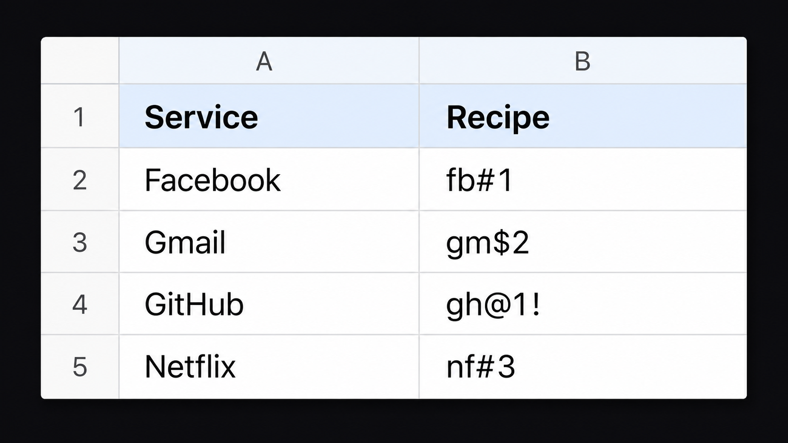

A short recipe in a spreadsheet, five private phrases in your head — every password derived on demand, nothing at rest.
We don't store your password. We store a recipe — a formula that builds it by combining a random text with a secret only you know.
The recipe tells the extension which secret to use and where to place it. Your secrets never appear on the sheet — they're encrypted on your machine.

This is all anyone sees — even if your sheet is public.
The sheet holds the text and the formula. The secret stays in your head. Without it, the recipe is just letters.
Section 01 showed a quick example. Here's the full syntax — every recipe follows this pattern.
Placement symbols — salt = abc, secret = XYZ
| Symbol | Meaning | Result |
|---|---|---|
# |
Prefix — secret before salt | XYZabc |
$ |
Suffix — secret after salt | abcXYZ |
@ |
Middle — secret inside salt | aXYZbc |
% |
Weave — alternate one by one | aXbYcZ |
^ |
Weave — alternate in pairs | abXYcZ |
Append optional modifier symbols after the position symbol to transform the output. Each modifier is deterministic and reversible — same recipe, same output, every time. Modifiers can be combined.
r4nd0m#1!?
← hash r4nd0m, position #, secret 1, then modifiers !?
Open a spreadsheet, click the cell with your recipe, then open PassChef. The popup auto-detects the cell and generates the password. Paste it, then close. Nothing was written to disk, nothing was sent over the network.
Your spreadsheet holds recipes — short codes like fb#1 or gh$2!.
Anywhere on the spreadsheet — PassChef reads the active cell.
Click the icon or press Ctrl+Shift+L (Mac: ⌃⇧L). The popup auto-routes to the Generated screen.
The password is on the clipboard. Close the popup and it disappears.
fb#1 to fb2#1.
Same secrets, completely different password. No secret changes needed.